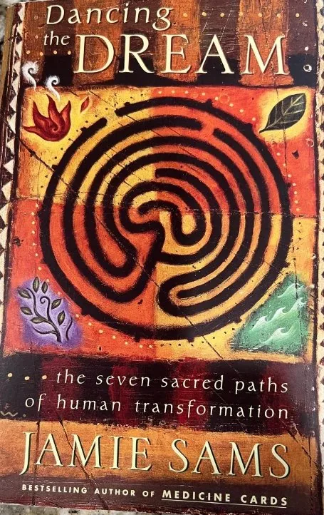

Nonfiction & How-To
Jamie Sams - Dancing the Dream: The Seven Sacred Paths of Human Transformation - Paperback
$10.00💳 Buy now with card
A soulful guide to personal growth rooted in Native American wisdom. Jamie Sams, bestselling author of Medicine Cards, maps seven sacred paths every person walks through life, blending teaching stories, reflection and practical insight to help you understand where you are on your journey and how to grow with purpose.
Features & benefits
- Paperback
- By Jamie Sams, bestselling author of Medicine Cards
- Explores seven sacred paths of human transformation
- Draws on Native American spiritual teachings and storytelling
- Great for readers interested in spirituality, healing and self-discovery
- Pre-owned: see photo for condition
- 🔒 Secure checkout
- 🚚 Ships from Denver, Colorado (USA)
- ↩️ 30-day returns
Questions? Call or text +1 720 799 4089 or email info@akiliwomarketplace.com